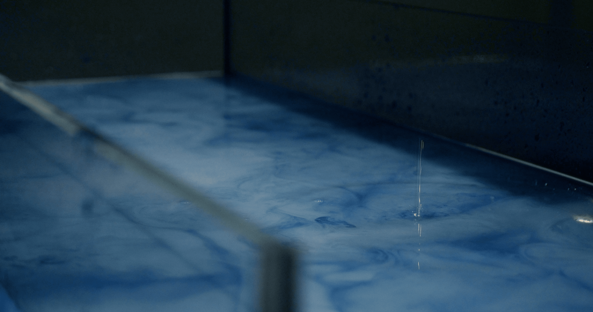

The discovery of radiation helped to unlock the deep time of present and future. Radiometric clocks are used to predict the age of rocks and other mineral materials through radiation decay. The deep future is connecting us to the unknown - how long will it take for radiation pollution to decay? From various nuclear tests and sinking of nuclear submarines in the ocean, from technogenic catastrophes (of or pertaining to a process or substance created by human technology; anthropogenic, manmade;). The connection between the nuclear and the cosmical from radium - a shining element found in uranium and compared to the sun - to cosmos exploration and the particles of radioactive dust spreading into the soil and air around the Earth.
As Svitlana Matviyenko said in her ğ”—ğ”¥ğ”¢ğ”¯ğ”ªğ”¬ğ”«ğ”²ğ” ğ”©ğ”¢ğ”𔯠â„ğ”¶ğ”Ÿğ”¢ğ”¯ğ”´ğ”𔯠lecture at 0x.salon: “The Charnobyl reactor opened its potential right now.†[1] And indeed, the full scale invasion of Ukraine by Russia unlocked some critical time in recent history. Disturbing the untouched nature of the exclusion zone, where nature despite radiation recovered to the levels before humans. The land of Ukraine is getting contaminated with chemicals from rockets and mines, like some time ago the land of Paliessie - a region in North of Ukraine, South Belarus and partially in Poland and Russia - was contaminated with radiation. As pollution from Charnobyl spread around the globe and traces are still found in fungi, animals and through food supply chains it is distributed globally. The same way, pollution from wars spreads around the globe and beyond, possibly to the cosmos.
J22 jahresausstellung hfk- 11 nov - 16 nov 2022-- blg forum, bremen
frieze design award 2022- jury mention